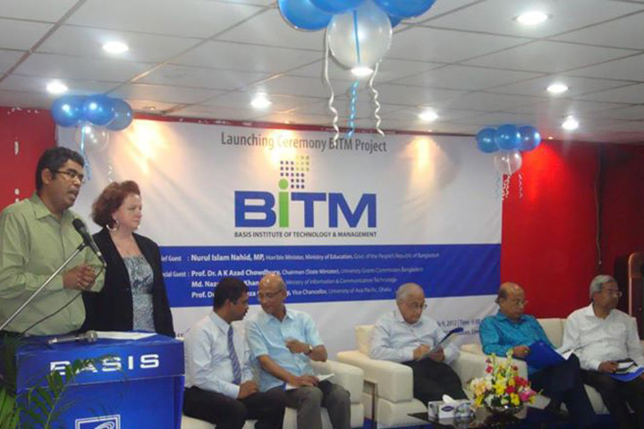
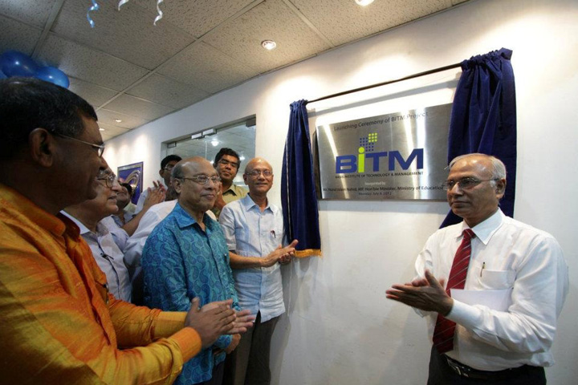

+8809612342486
|  |  | To address the skill gap of HR in the industry, BASIS started its own training activities in 2007. Later in 2012, BASIS institutionalized its training activities and set up BASIS Institute of Technology & Management (BITM) with the support of World Bank. BITM was established with a vision to be a world-class IT institute in Bangladesh for the purpose of enhancing the competitiveness of the IT Sector in Bangladesh by creating a pool of qualified IT professionals and quality certified IT companies. |